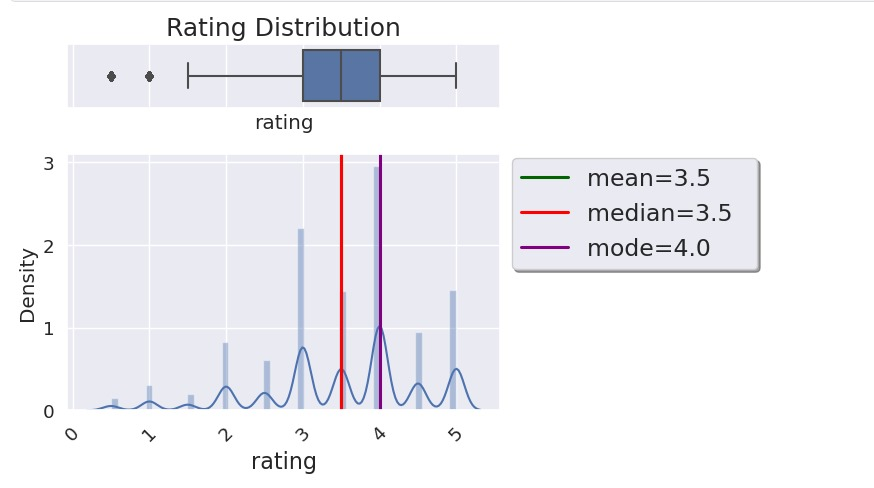
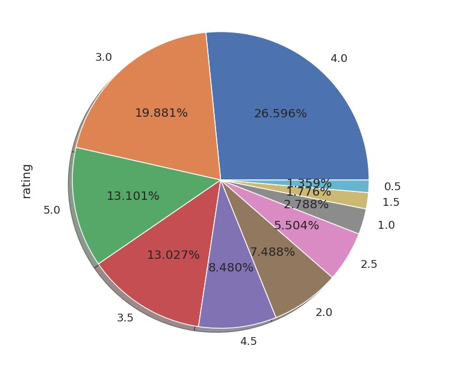

In the contemporary landscape of digital media consumption, the vast
array of available movies presents a challenge for users seeking personalized
recommendations. In response, this project introduces a machine learning-
based movie recommendation system designed to address this challenge. Our
system leverages user preferences and historical movie ratings to offer tailored
recommendations, thereby enhancing user engagement and satisfaction with
movie platforms. We employ collaborative filtering, content-based filtering,
and matrix factorization techniques to generate accurate and diverse movie
suggestions. Additionally, we conduct thorough performance evaluations us-
ing various metrics and compare our system with existing recommendation
approaches. The results demonstrate the efficacy and efficiency of our method
in delivering relevant movie recommendations, with implications for enhanc-
ing user satisfaction and engagement in movie consumption platforms.
Joeran Beel, Bela Gipp, Stefan Langer, and Corinna Breitinger. Research-paper recommender systems : a literature survey. International Journal on Digital Libraries, 17(4):305-338, 2016. ISSN 1432-5012. doi:10.1007/s00799-015-0156-0
Hrisav Bhowmick, Ananda Chatterjee, and Jaydip Sen. Comprehensive movie recom- mendation system, 2021.
Nicolas Hug. Surprise: A python library for recommender systems. Journal of Open Source Software, 5(52):2174, 2020. doi:10.21105/joss.02174. URL https://doi. org/10.21105/joss.02174.
F. Pedregosa, G. Varoquaux, A. Gramfort, V. Michel, B. Thirion, O. Grisel, M. Blon- del, P. Prettenhofer, R. Weiss, V. Dubourg, J. Vanderplas, A. Passos, D. Cournapeau, M. Brucher, M. Perrot, and E. Duchesnay. Scikit-learn: Machine learning in Python. Journal of Machine Learning Research, 12:2825–2830, 2011
Xun Zhou, Jing He, Guangyan Huang, and Yanchun Zhang. Svd-based incre- mental approaches for recommender systems. Journal of Computer and System Sciences, 81(4):717–733, 2015. ISSN 0022-0000. doi:https://doi.org/10.1016/ j.jcss.2014.11.016. URL https://www.sciencedirect.com/science/article/ pii/S0022000014001706. 6